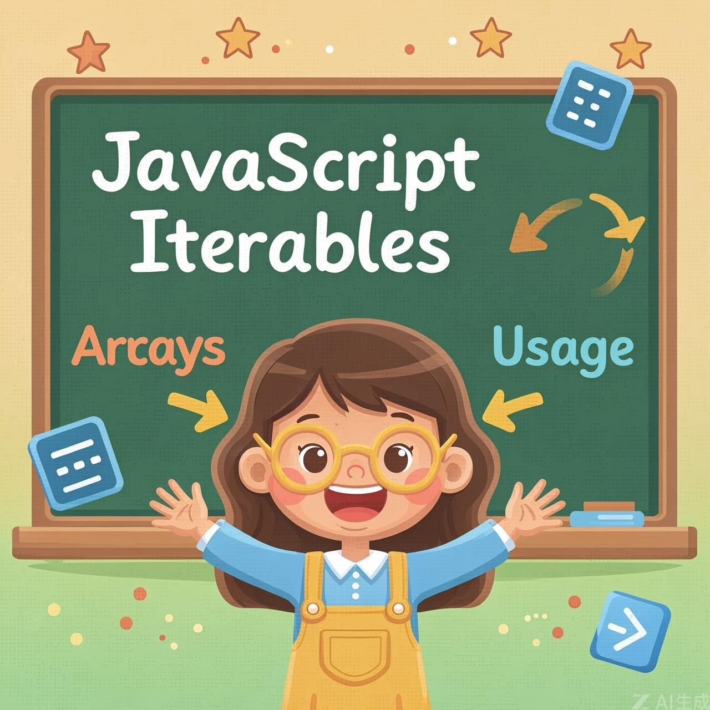

Objects that can be used in for..of loops

Iterable objects are a generalization of arrays. That's a concept that allows us to make any object useable in a for..of loop.
Of course, Arrays are iterable. But there are many other built-in objects, that are iterable as well. For instance, strings are also iterable.
If an object isn't technically an array, but represents a collection (list, set) of something, then for..of is a great syntax to loop over it, so let's see how to make it work.
We can easily grasp the concept of iterables by making one of our own.
For instance, we have an object that is not an array, but looks suitable for for..of.
Like a range object that represents an interval of numbers:
Implementing Symbol.iterator
To make the range object iterable (and thus let for..of work) we need to add a method to the object named Symbol.iterator (a special built-in symbol just for that).
Here's the full implementation for range with remarks:
Please note the core feature of iterables: separation of concerns.
The range itself does not have the next() method. Instead, another object, a so-called "iterator" is created by the call to range[Symbol.iterator](), and its next() generates values for the iteration. So, the iterator object is separate from the object it iterates over.
Technically, we may merge them and use range itself as the iterator to make the code simpler.
Like this:
Now range[Symbol.iterator]() returns the range object itself: it has the necessary next() method and remembers the current iteration progress in this.current. Shorter? Yes. And sometimes that's fine too.
The downside is that now it's impossible to have two for..of loops running over the object simultaneously: they'll share the iteration state, because there's only one iterator – the object itself. But two parallel for-ofs is a rare thing, even in async scenarios.
Endless sequences and built-in iterables
Infinite iterators are also possible. For instance, the range becomes infinite for range.to = Infinity. Or we can make an iterable object that generates an infinite sequence of pseudorandom numbers. Also can be useful.
There are no limitations on next, it can return more and more values, that's normal.
Of course, the for..of loop over such an iterable would be endless. But we can always stop it using break.
Arrays and strings are most widely used built-in iterables.
For a string, for..of loops over its characters:
And it works correctly with surrogate pairs!
For deeper understanding, let's see how to use an iterator explicitly.
We'll iterate over a string in exactly the same way as for..of, but with direct calls. This code creates a string iterator and gets values from it "manually":
That is rarely needed, but gives us more control over the process than for..of. For instance, we can split the iteration process: iterate a bit, then stop, do something else, and then resume later.
Understanding the difference
Two official terms look similar, but are very different. Please make sure you understand them well to avoid the confusion.
When we use JavaScript for practical tasks in a browser or any other environment, we may meet objects that are iterables or array-likes, or both.
For instance, strings are both iterable (for..of works on them) and array-like (they have numeric indexes and length).
But an iterable may not be array-like. And vice versa an array-like may not be iterable.
For example, the range in the example above is iterable, but not array-like, because it does not have indexed properties and length.
And here's the object that is array-like, but not iterable:
Both iterables and array-likes are usually not arrays, they don't have push, pop etc. That's rather inconvenient if we have such an object and want to work with it as with an array. E.g. we would like to work with range using array methods. How to achieve that?
There's a universal method Array.from that takes an iterable or array-like value and makes a "real" Array from it. Then we can call array methods on it.
For instance:
Array.from at the line (*) takes the object, examines it for being an iterable or array-like, then makes a new array and copies all items to it.
The same happens for an iterable:
The full syntax for Array.from also allows us to provide an optional "mapping" function:
The optional second argument mapFn can be a function that will be applied to each element before adding it to the array, and thisArg allows us to set this for it.
For instance:
Here we use Array.from to turn a string into an array of characters:
Unlike str.split, it relies on the iterable nature of the string and so, just like for..of, correctly works with surrogate pairs.
Technically here it does the same as:
Array.from is a powerful method for converting both iterables and array-like objects into actual arrays, making them compatible with all array methods.
Collection of keyed data items
Till now, we've learned about the following complex data structures:
But that's not enough for real life. That's why Map and Set also exist.
Map is a collection of keyed data items, just like an Object. But the main difference is that Map allows keys of any type.
For instance:
As we can see, unlike objects, keys are not converted to strings. Any type of key is possible.
Although map[key] also works, e.g. we can set map[key] = 2, this is treating map as a plain JavaScript object, so it implies all corresponding limitations (only string/symbol keys and so on).
So we should use map methods: set, get and so on.
For instance:
Using objects as keys is one of the most notable and important Map features. The same does not count for Object. String as a key in Object is fine, but we can't use another Object as a key in Object.
Let's try:
As visitsCountObj is an object, it converts all Object keys, such as john and ben above, to same string "[object Object]". Definitely not what we want.
How keys are compared and how to iterate over maps
To test keys for equivalence, Map uses the algorithm SameValueZero. It is roughly the same as strict equality ===, but the difference is that NaN is considered equal to NaN. So NaN can be used as a key as well.
This algorithm can't be changed or customized.
Every map.set call returns the map itself, so we can "chain" the calls:
For looping over a map, there are 3 methods:
For instance:
The iteration goes in the same order as the values were inserted. Map preserves this order, unlike a regular Object.
Besides that, Map has a built-in forEach method, similar to Array:
When a Map is created, we can pass an array (or another iterable) with key/value pairs for initialization, like this:
If we have a plain object, and we'd like to create a Map from it, then we can use built-in method Object.entries(obj) that returns an array of key/value pairs for an object exactly in that format.
So we can create a map from an object like this:
Here, Object.entries returns the array of key/value pairs: [ ["name","John"], ["age", 30] ]. That's what Map needs.
Converting back and forth between objects and collections
We've just seen how to create Map from a plain object with Object.entries(obj).
There's Object.fromEntries method that does the reverse: given an array of [key, value] pairs, it creates an object from them:
We can use Object.fromEntries to get a plain object from Map.
E.g. we store the data in a Map, but we need to pass it to a 3rd-party code that expects a plain object.
A call to map.entries() returns an iterable of key/value pairs, exactly in the right format for Object.fromEntries.
We could also make line (*) shorter:
That's the same, because Object.fromEntries expects an iterable object as the argument. Not necessarily an array. And the standard iteration for map returns same key/value pairs as map.entries(). So we get a plain object with same key/values as the map.
A Set is a special type collection – "set of values" (without keys), where each value may occur only once.
Its main methods are:
The main feature is that repeated calls of set.add(value) with the same value don't do anything. That's the reason why each value appears in a Set only once.
For example, we have visitors coming, and we'd like to remember everyone. But repeated visits should not lead to duplicates. A visitor must be "counted" only once.
Set is just the right thing for that:
The alternative to Set could be an array of users, and the code to check for duplicates on every insertion using arr.find. But the performance would be much worse, because this method walks through the whole array checking every element. Set is much better optimized internally for uniqueness checks.
Looping over sets and converting sets
We can loop over a set either with for..of or using forEach:
Note the funny thing. The callback function passed in forEach has 3 arguments: a value, then the same value valueAgain, and then the target object. Indeed, the same value appears in the arguments twice.
That's for compatibility with Map where the callback passed forEach has three arguments. Looks a bit strange, for sure. But this may help to replace Map with Set in certain cases with ease, and vice versa.
The same methods Map has for iterators are also supported:
We can easily convert between Set and Array:
From Array to Set:
From Set to Array:
Removing duplicates from an array:
Checking if an array contains only unique values:
Set operations (union, intersection, difference):
Set is a powerful collection for managing unique values and performing operations like union, intersection, and difference efficiently.
Complete overview of iterables, Map, and Set
The differences from a regular Object:
Iteration over Map and Set is always in the insertion order, so we can't say that these collections are unordered, but we can't reorder elements or directly get an element by its number.
Congratulations! You've completed the comprehensive guide to JavaScript Iterables, Map, and Set. Keep practicing and exploring these concepts to become a JavaScript expert!